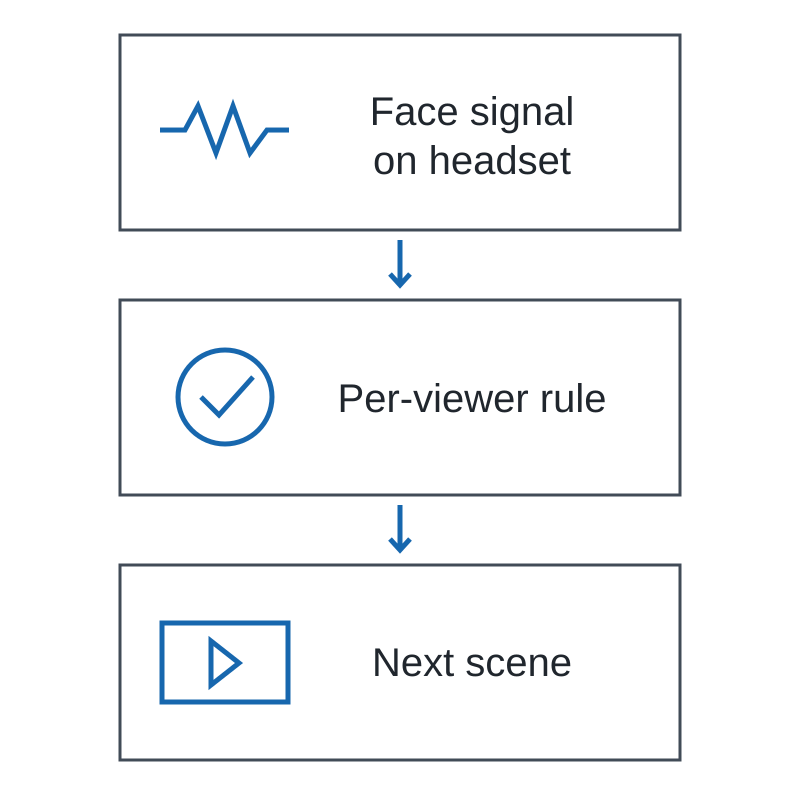

Closed-Loop VR Cinema Driven by On-Headset Facial Action Signals
Manuscript in preparation, 2026
Adaptation used a per-viewer rule on facial action signals; a separate recognition model was benchmarked on the corpus. As first author, I built the system and ran the 36-person study of requested and delivered adaptation. The corpus contains 5,602 annotated spontaneous facial events from 45 participants; on-headset processing took a median of 486 ms (preprocessing and model inference).

System and study
First author; built the system and ran the study. A per-viewer rule on facial action signals selected the next scene on a standalone headset; the trained recognition model was benchmarked separately and did not select film scenes.
Corpus and benchmark
The integrated corpus contains 5,602 annotated spontaneous facial events from 45 participants. The recognition benchmark uses leave-one-subject-out evaluation and leakage controls; it is part of this cinema work.
Timing and delivery
On-headset processing took a median of 486 ms, covering preprocessing and model inference for successful executions. This is a processing measurement, rather than full scene-delivery latency.
The separate 36-person Static, Adaptive and Yoked study distinguishes requested adaptation from delivered changes. Available authored content and sensing gaps limit delivery.